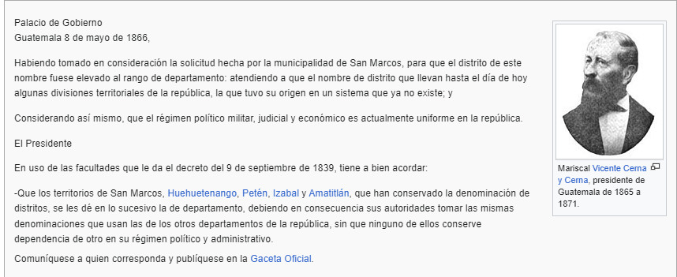

Hasta el 12 de febrero de 1546, fecha en que se erigió la Arquidiócesis de México por medio de la bula Super universæ orbis ecclesiæ, las diócesis de Chiapas y de Guatemala fueron sufragáneas de la Archidiócesis de Sevilla. Desde ese momento quedaron como sufragáneas de México y entonces, el obispo Francisco Marroquín dividió la administración del valle central de Guatemala entre los frailes de la Orden de Predicadores y los franciscanos.
Conventos mercedarios
Retrato del obispo Pedro Cortés y Larraz, quien llegó a Tejutla en 1770. Tejula Tejula Tejula Jacaltenango Jacaltenango Chiantla Chiantla Amatique Amatique Santiago de Guatemala Santiago de Guatemala San Juan Ostuncalco San Juan Ostuncalco Conventos de los Mercedarios durante la época colonial en Guatemala y área aproximada de las doctrinas que les pertenecían. La Villa de Tejutla, nombre oficial de la localidad, es tan antigua que cuando los conquistadores españoles llegaron a la región en 1524, era ya un poblado de gran importancia dentro de los poblados de raza mam, por su industria textil. Según los escritos históricos de la Recordación Florida de Francisco Antonio de Fuentes y Guzmán, Tejutla pertenecía a la jurisdicción de Quetzaltenango y era «una tierra de bonanza y riqueza de climas y bosques agradables con suficiente agua». Ya cuando los indígenas estuvieran catequizados y hablaran español, podrían empezar a vivir en parroquias y a contribuir con el diezmo, como hacían los peninsulares. 14 Por otra parte, protegidos por sus privilegios apostólicos para ayudar a la conversión de los indígenas, los misionares solamente atendieron a la autoridad de sus priores y provinciales, y no a la de las autoridades españolas ni a las de los obispos. Rey Carlos III de España, promotor de las reformas borbónicas. En 1754, en virtud de una Real Cédula parte de las Reformas Borbónicas, todos los curatos de las órdenes regulares fueron traspasados al clero secular.
En 1765 se publicaron las reformas borbónicas de la Corona española, que pretendían recuperar el poder real sobre las colonias y aumentar la recaudación fiscal. 1920 Con estas reformas se crearon los estancos para controlar la producción de las bebidas embriagantes, el tabaco, la pólvora, los naipes y el patio de gallos. La real hacienda subastaba el estanco anualmente y un particular lo compraba, convirtiéndose así en el dueño del monopolio de cierto producto. La política de disminución de poder de la iglesia se basaba en la Ilustración y tenía seis puntos principales, entre los que destacaba una crítica al papel de la Iglesia dentro de la sociedad y de sus organismos derivados, sobre todo de las cofradías y hermandades. mercedarios de Guatemala entregaron sus doctrinas al clero secular, con casi treinta y tres mil indios de la sierra, todos bautizados e instruidos en la fe católica. Época independiente El departamento de San Marcos formó parte del Sexto Estado de los Altos y de todos los intentos y movimientos para la formación del aquel Estado, que luego fracasó después de su segundo intento en 1840, que también frustrados por presidente Rafael Carrera y Turcios. La diferencia entre los departamentos y los distritos independientes era que los departamentos fueron instituidos en donde había curatos y poblados definidos, mientras que los distritos lo fueron en las regiones más alejadas e inhóspitas del estado. Los poblados fueron definidos utilizando el listado que generó el gobierno del Dr. Mariano Galvez en 1836 para implementar los fracasados juicios de jurados, y cada departamento estaba dividido en distritos menores para su mejor gobierno.
Tras la sangrienta recuperación del Estado de Los Altos por parte de Carrera, el 26 de febrero de 1840 los departamentos del mismo, Quetzaltenango y el Barrio, se reintegraron al Estado de Guatemala a petición de los pobladores indígenas de las municipalidades fuera de Quetzaltenango. Sin embargo, tras la salida de Carrera del poder en 1848, el Estado de Los Altos nuevamente se separó de Guatemala, pero cuando era inminente el retorno del caudillo conservador, el 8 de mayo de 1849 se firmó un convenio entre el general Mariano Paredes, presidente de la República de Guatemala y el general Agustín Guzmán en la ciudad de Antigua Guatemala para que los territorios separados se reincorporaron a la nación guatemalteca.
El 8 de mayo de 1866, el gobierno del mariscal Vicente Cerna y Cerna elevó a San Marcos a la categoría de departamento por el acuerdo que dice:
